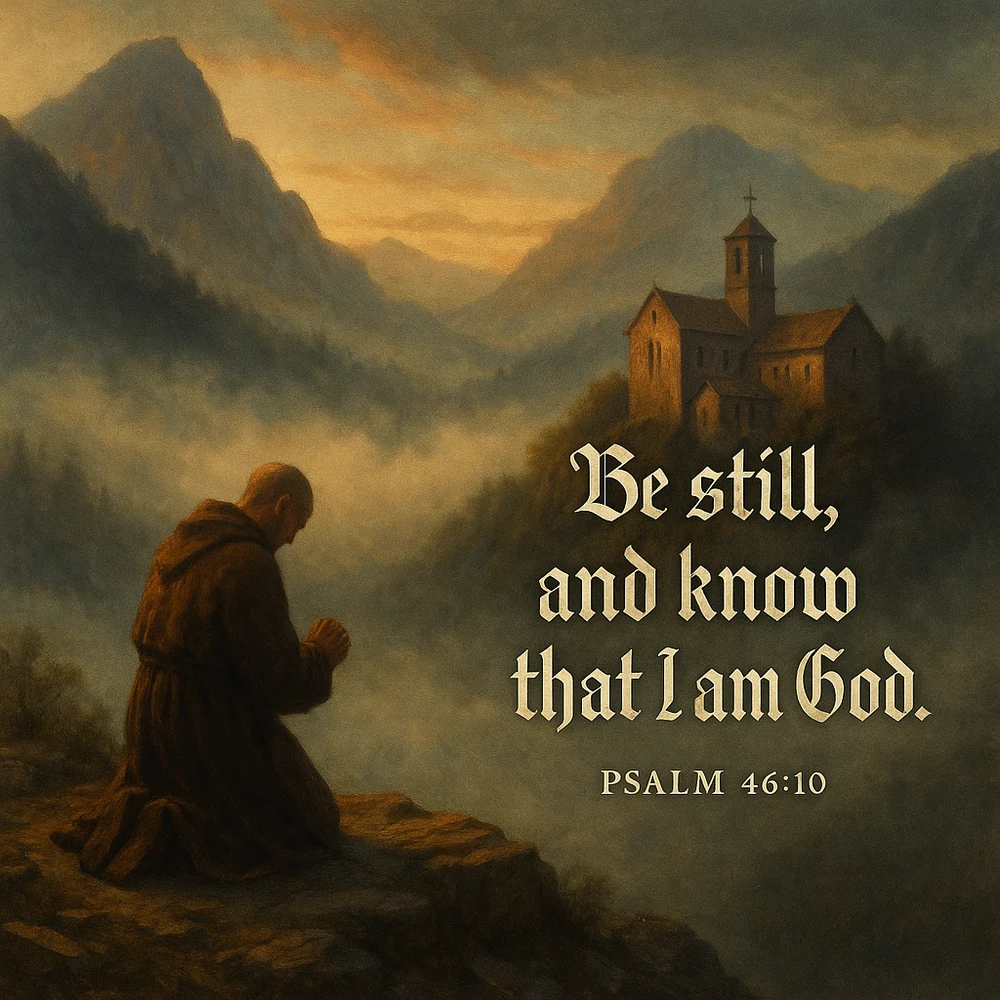
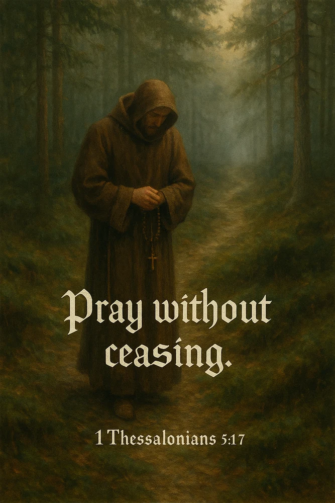
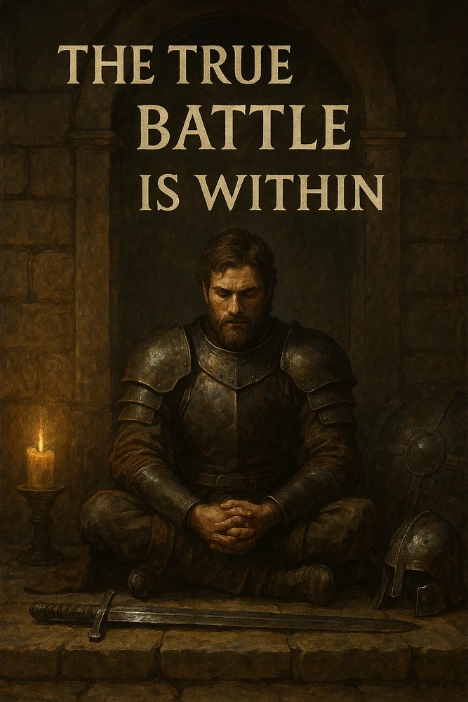
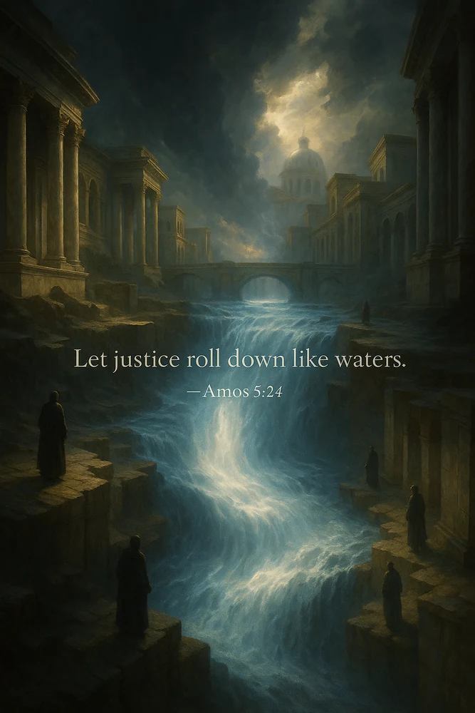
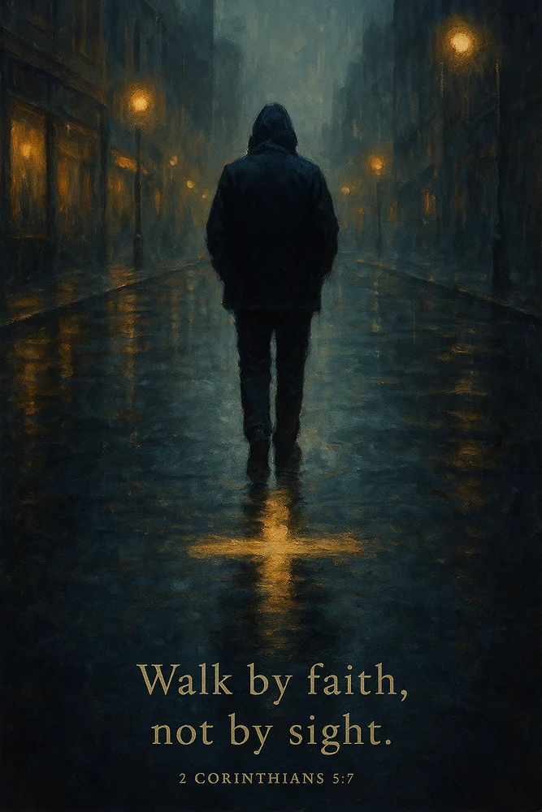
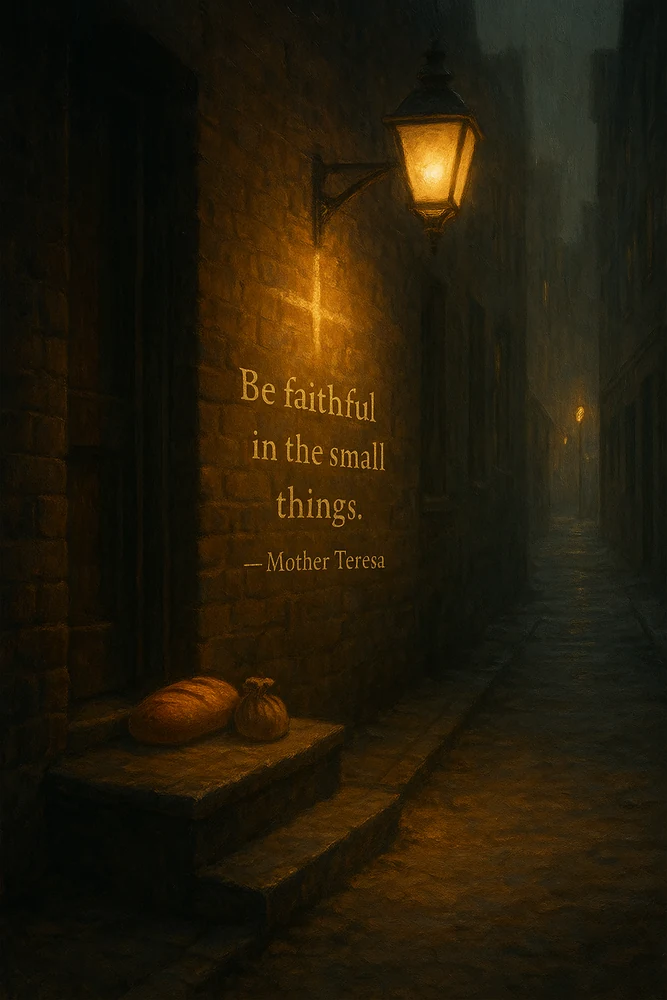

Ancient faith for ordinary days.
Scripture. Reflection. Daily faithfulness.
Veni Faithful pairs Christian scripture and devotional thought with warm, painterly imagery—creating quiet moments for prayer, discipline, perspective and hope.
Instagram · active Future publications · planned

A devotional platform built around reflection rather than noise.
The project uses short-form visual devotionals to create a deliberate pause in the everyday scroll.
Its tone moves between scripture, prayer, discipline, wonder, endurance and conscience. The imagery is intentionally warm and contemplative: monastic spaces, ordinary streets, wilderness, lamplight, architecture and moments of solitude.
Image, reflection, commentary.
Each entry is designed as a small devotional unit rather than a standalone decorative quote.
- 01Begin with a verse or devotional thought
A short spiritual prompt establishes the focus of the entry.
- 02Build the visual meditation
Painterly imagery creates atmosphere without competing with the message.
- 03Offer a concise reflection
The central thought is expanded into something practical, contemplative or encouraging.
- 04Carry it into the day
Commentary gives the idea context and turns the post toward faithful practice.
Faith expressed through more than one mood.
Selected artwork from the existing Veni Faithful library.





On mobile, swipe horizontally through the devotional library.
A media platform first. Publishing can follow.
Veni Faithful can later extend naturally into collected devotionals, journals and other faith-based publications.
Those formats are future directions only. There are no Veni Faithful books, journals, POD products or shop links being presented as available yet.